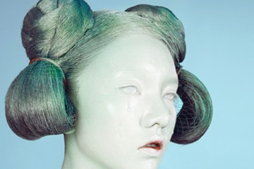
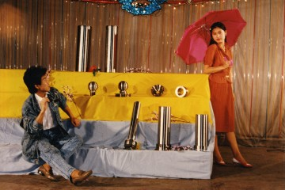
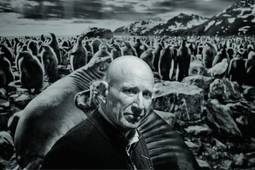
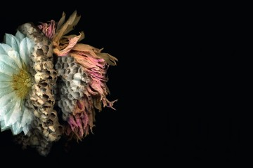
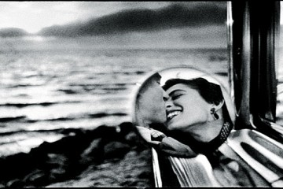

透过时间的童话之梦 直男 2016-11-30 事件 影廊 2016年11月29日，杜梦堂上海画廊将荣幸举办著名摄影师威利-里佐(Willy Rizzo, 1928-2013)摄影个展一一“佩罗童话系列”。此次展览将首次以个展形式完整呈现威利-里佐于1959年以法国儿童文学之父一一夏尔-佩罗的童话故事为灵感来源，所创作的8幅童话系列摄影作品。
 美丽说·色影无忌独家对话|任欣羽：每一个细节都要有灵魂 音匀筠 2016-11-30 人像, 影廊, 沙龙, 活动, 艺术 她长得很漂亮，电影女主角那般的气质。拿着相机的时候，美得像是中世纪绘画中的女人，眼神专注得令人心动。 不是每一个漂亮女人都想成为大明星，她的根是摄影，是她最终回归的地方。
旅行拍照时脸背光怎么办？如何拍出美丽的逆光人像照？ 吕蓓卡 2016-11-28 人像, 前期, 影廊, 攻略, 生活, 行摄 拍摄逆光人像会产生迷人的轮廓光，发丝看起来会很美丽，并可能拍到好看的星芒，但是！直接拍摄很可能经常会对不上焦，或者会拍出大黑脸，这时就需要很多技巧啦。
 看完这场图片秀，能让你少剁几回手 直男 2016-11-17 展讯, 影廊, 未分类 以“高专业水准”著称，在海内外摄影界享有很高声誉的连州国际摄影年展将于11月19日在广东连州开幕。本届年展以“无乐不作”为年度主题，关注过度消费与娱乐。
华为Mate 9和Mate 9 Pro国内发布 售价3399元起 JR 2016-11-16 器材, 手机摄影, 装备 11月14日，华为Mate 9/Mate 9 Pro在上海正式发布。作为2016年度压轴旗舰，华为Mate 9/Mate 9 Pro搭载了最新的麒麟960芯片、第二代徕卡双摄像头，在智能手机硬件上实现了再一次的突破。同时，华为对Android 7.0进行手术刀式的底层深度优化，推出了全新的EMUI 5.0，让华为Mate 9/Mate 9 Pro在软件层面实现了具有里程碑意义的体验提升，为用户带来了全新革命性安卓体验
Warm winter portrait 5个“温暖牌”道具 巧拍冬季人像 wangshuang 2016-11-04 人像, 前期, 影廊, 攻略, 时尚, 艺术, 静物 初冬季节，如何拍摄出带有浓浓暖意的人像？不同的场景下，我们选用了不同的道具来给画面增加温暖，围巾、咖啡杯、台灯、毛毯和串灯，利用这几款“温暖牌”道具，在我们熟悉的场景中，拍出这个冬天最温暖的人像吧。
 萨尔加多 敬畏万物 在世界边缘游走 wangshuang 2016-11-04 影廊, 生活, 纪实, 胶片 在摄影大师萨尔加多的影像世界中，一面是记录着社会苦难的真实写照，另一面是承载着自然世界的浪漫语言，在他的最新作品《创世纪》问世后，人们再次被这位大师的影像探索所折服，他没有停留在已有的光环中，而是迈向那些不为人熟知的土地，完成一次次影像探险，最终以作品赢得了人生中的第二个高峰，在他看来，这部《创世纪》是写给地球的一封情书。我们邀请到国内摄影评论家姜纬及法国摄影评论家蕾莉亚分别对萨尔加多的两个拍摄时期进行解读。
 都市农夫 用摄影演绎生命轮回 wangshuang 2016-11-04 影廊, 时尚, 未分类, 艺术, 静物 对于具有业余园艺师和摄影师双重身份的 Kim Kauffman而言，园艺与摄影更像是硬币的两面，从不同角度观察植物的颜色、肌理和生命独特的戏剧节奏。作为对大自然不同的表达方式，两者相互交织、殊途同归，实现了Kim Kauffman与大自然的灵性对话。
 借摄影师的脚步游世界 wangshuang 2016-11-03 影廊, 胶片, 艺术 世界之大，无奇不有，或许我们没有机会亲自去到每个地方，体验别人的生活，也没有时光机可以回到过去见证历史，但是我们却可以跟随摄影师的脚步回望过去，也可以借助他们的脚步体验新奇纷繁的世界。
上帝爱冰岛 更爱勇敢的摄影师 wangshuang 2016-11-03 影廊, 艺术, 风光 以色列摄影师Erez Marom每年如候鸟一般到冰岛进行拍摄，因无法放弃对于自然的热爱，身为大学讲师的他，放弃稳定的工作，选择追随自然的脚步。他深深痴迷于大自然对这片土地的鬼斧神工，让我们一起跟随Erez，从他的作品中感受别样冰岛。